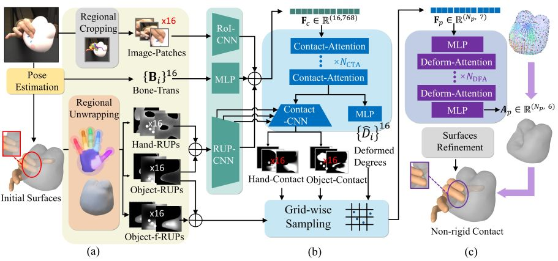
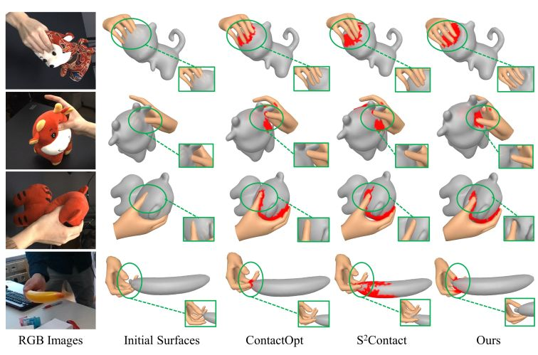
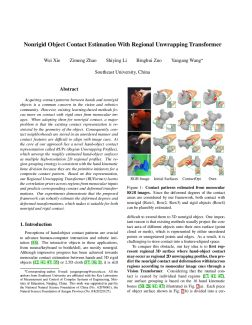

IEEE/CVF International Conference on Computer Vision (ICCV), 2023
Nonrigid Object Contact Estimation With Regional Unwrapping Transformer

Overview of RUFormer.
(a) The preparation process of RUFormer input data, all of which are aligned to the hand 16 regions. (b) RUFormer Encoder estimates hand-object regional contact areas from image patches, hand bone transformation and RUPs. (c) RUFormer Decoder estimates fine-grained deformation from grid-wise sampling features. Abstract
Acquiring contact patterns between hands and nonrigid objects is a common concern in the vision and robotics community. However, existing learning-based methods focus more on contact with rigid ones from monocular images. When adopting them for nonrigid contact, a major problem is that the existing contact representation is restricted by the geometry of the object. Consequently, contact neighborhoods are stored in an unordered manner and contact features are difficult to align with image cues. At the core of our approach lies a novel hand-object contact representation called RUPs (Region Unwrapping Profiles), which unwrap the roughly estimated hand-object surfaces as multiple high-resolution 2D regional profiles. The region grouping strategy is consistent with the hand kinematic bone division because they are the primitive initiators for a composite contact pattern. Based on this representation, our Regional Unwrapping Transformer (RUFormer) learns the correlation priors across regions from monocular inputs and predicts corresponding contact and deformed transformations. Our experiments demonstrate that the proposed framework can robustly estimate the deformed degrees and deformed transformations, which makes it suitable for both nonrigid and rigid contact.
Results

Comparisons on contact patterns optimization. Row1, Row2 and Row 3 are 3D nonrigid interactions. Row4 is 3D rigid interaction.
Materials
|

Related links
|
|
Reference
Wei Xie, Zimeng Zhao, Shiying Li, Binghui Zuo and Yangang Wang. "Nonrigid Object Contact Estimation With Regional Unwrapping Transformer". IEEE/CVF International Conference on Computer Vision (ICCV), 2023.
Acknowledgments: This work was supported in part by the National Natural Science Foundation of China (No. 62076061), in part by the Natural Science Foundation of Jiangsu Province (No. BK20220127).